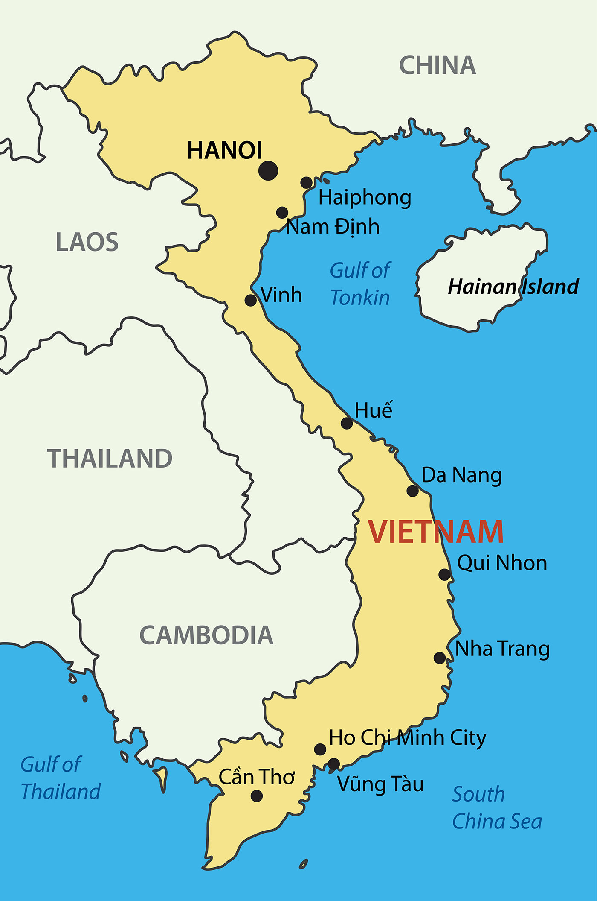

Phở as a cultural dish has existed for the better part of 100 years. From its humble beginnings to its worldwide travel and to its contemporary evolution, Phở has been a dish that many love.
Origins

Phở started to appear in northern Vietnam around the early 1900s (1900-1907), with most people tracing it back to Nam Định and Hanoi. During this time, Vietnam was a colonial subject of the French empire, and a part of the French Indochinese Union, which shaped the diets of the local population and how phở came to be. Before the arrival of the French, Vietnamese people would not consume cattle, but rather use cattle as farming equipment, such as a plow. As the French started to flood into Vietnam, so did a big demand for beef. As the French imported and ate beef, the leftovers, bones and cheap cuts would end up with local chefs, who simmered them for hours into the broth that phở is known for today.
Early in its existence, phở was a street food. Vendors would carry everything that was needed to prepare a bowl of phở on the spot. At first vendors would only sell beef phở (phở tái), with chicken phở only becoming common around 1939, when beef sales were restricted on certain days and vendors switched to chicken instead.
The Impact of the Vietnam War
In 1954, Vietnam was split into two parts, Communist North and Capitalist South after the First Indochina War. Around a million Vietnamese moved to the South, taking phở recipes with them. Once phở reached Saigon, the southern capital of the new Republic of Vietnam, the dish began to change. The South had more fresh produce, so cooks began serving it with a plate of herbs and bean sprouts on the side, with the broth becoming a little sweeter to match Southern tastes. Meanwhile in the North, food became scarce, forcing the population to cook with whatever they had on hand, at one point they began cooking phở with no meat. This dish, nicknamed phở không người lái, or "pilotless phở," gave the Northern style its distinctive focus on broth quality, keeping the overall dish simple with little to no extra side ingredients.

As the Communist Northern forces captured Saigon in 1975, hundreds of thousands of Southern Vietnamese fled their home country, with many resettling in the United States. Since most of them came from the South, the Southern style phở is what they brought. Families opened small phở restaurants to serve their own communities, with people outside the Vietnamese community discovering Vietnamese cuisine over the next few decades.
If you've ever gone to a Vietnamese restaurant, you've probably noticed that a lot of restaurants have a number in their name, like Phở 54, Phở 75, or Phở 79. Those numbers aren't random and carry significant meaning. For many owners, the number represents a year that has meaning to them. 54 often refers to 1954, when families moved from the North to the South, and 75 refers to 1975, the year Saigon fell and many Vietnamese fled the country. Other restaurants use the year the owners left Vietnam or arrived in the U.S.
Modern Twists
Phở has come a long way from its humble beginnings as a street food. People from different cultures and backgrounds are finding new ways to experience and enjoy the dish. Restaurants have turned it into fusion food, like phở burritos stuffed with noodles, beef, and herbs, or a phở French dip, where a beef sandwich gets dunked in phở broth instead of au jus. There are also phở tacos, phở-flavored ramen, and even phở-inspired seasonings and chips.